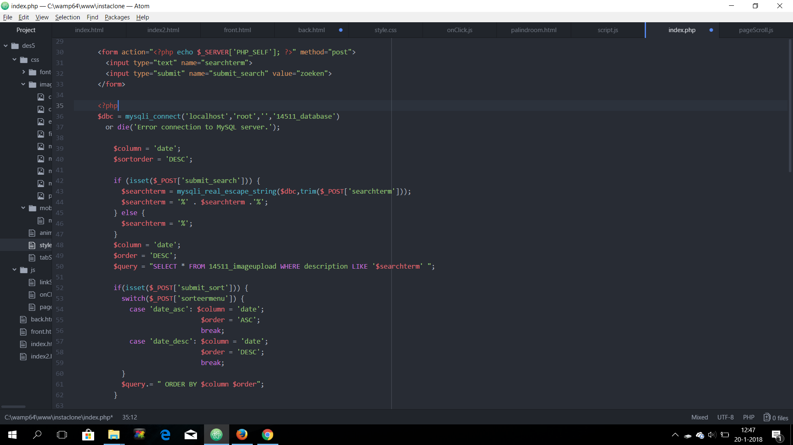

Palindroon
De opdracht was om een functie te maken die
palindromen kan herkennen.
Wat ik doe ik pak eerst de input stop dat in
een anderen variabele zeg dan dat alle hoofdletters
naar kleine letters gaan ik vervang lees tekens
maak dan nog een variabel maak dan een forloop
met min en laat het door de hele string
heen lopen check dan
waarna ik kijk of de strings het zelfde zijn.
Auto correctie
De opdracht was dat k een auto correctie moest
maken over het aantal geleverde land name.
Wat ik doe met de code ik begin met het
maken van een class dan vul ik mijn variabelen
en ik maak een div en geef die een id ik zeg dan
als de parameters lengte groter of gelijk aan
this.minimaantelkar geef die een display block
mee roep een functie aan dan maak ik een array ik
roep dan een forloop aan en dan als inv gelijk
staat aan bron zo ja push ik de bron in lijst
en dan als lijst groter of gelijk aan 1 laat dan
de lijst zien ik zeg dan dat hulp niet
zichtbaar is maak dan een forloop ik maak
dan een span geef mijn span dan een parameter
mee maak hupl en child van mijn span ik maak
dan een klik event en roep dan mijn functie
aan ik bepaal daarna de margin maak dan een
functie voor het ophalen van de landen uit
een ander bestand maak dan de
functie om de helper te verbergen ik vul mijn
variabel geef een id mee en zeg keyup roep mijn
functie aan.
My band
De opdracht was dat je een site moest maken
over een artiest of band waar je foto's kan uploaden
en kan inloggen.
Wat ik doe is ik start een sessie check dan of
er al een coockie en sessie gemaakt is dan zeg
ik als erop login knop gedrukt word word er gecheckt
of de inlog velden niet leeg zijn dan maak ik de
database connectie haal dan vergelijkende data uit
de database dan pak ik ze allemaal met fetch ik
define ze nog een keer en check dan of de gegevens
uit de database het zelfde zijn als de ingevulde
gegevnens zo ja word er een cookie en sessie
aangemaakt dan start ik weer een connectie met
de database maak de query en schiet die af vul
mijn variabelen maak een nieuwe query en zeg pak
alles uit mijn database met een limiet ik haal
dan met een while fetch ik alles uit mijn
database devine mijn variabelen nog een
keer en echo dan alles in een div die dan
later via css styling krijgt.
PHP search
De opdracht was om een php zoek functie te maken.
Wat ik doe is ik maak de form eerst aan dan
maak ik de database connectie vul mijn variabelen
zeg dan als er op de submit knop is gedrukt haal
dan mijn zoek veld binnen geef het dan een
waarde dan maak de query pak alles uit de
database waar je tabel is als searchterm.
Bit
De opdracht was een veld met vierkanten te check dan
maken en als erop geklikt word dat de kleur veranderd.
Wat ik doe is ik vul mijn variabele zeg dan this
state is truekoppel de y en x ik voeg dan een
event toe op klik ik maak dan drie variabelen aan
en zeg dat ik de grote van mijn canvas wil dan
zeg ik dat de canvas grote min x/y positie van
mijn muis ik kijk dan of alles groter of kleiner
is en roep dan mijn andere functie aan dan de
tweede functie is er om de vierkanten te maken
en dan gebruikt ik for loops om al mijn vierkanten
te maken.